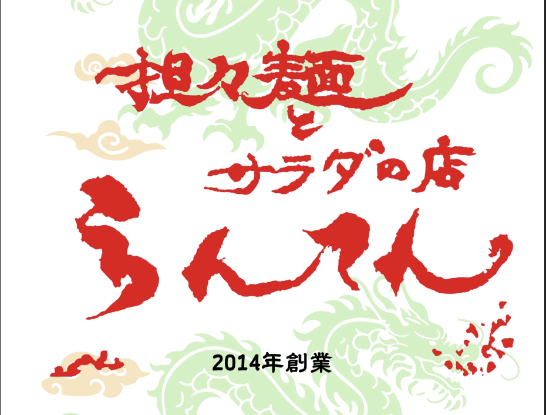

🍜 MenuMate

👥 ご来店タイプをお選びください
※必須
初めての方
（男性）
初めての方
（女性）
お子様連れ
の方
２回以上来店
🌶️ 辛さの好みをお選びください
※必須
辛さなし
1
ひかえめ
2
ふつう
3
辛口
4
大辛以上
5
⚠️ アレルギーがあるものを選んでください
※必須
小麦
大豆
卵
乳製品
ごま
えび
鶏肉
豚肉
アレルギーなし
✨ 今日の気分は？
がっつり系
満腹重視
あっさり系
ヘルシー重視
🎯 おすすめを教えて！
💡 らんてんMenuMateからの提案
⚠️ アレルギー情報
🌶️ 辛さ調整
より弱く
このまま
より辛く
✅ これで注文します！
← 最初から選び直す
🎉 素敵なお食事を
お楽しみください 🎉
📋 ご注文内容
← 新しく選ぶ